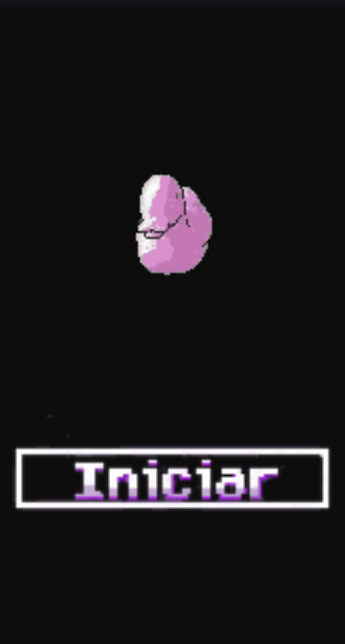

AAAAAAAAAAAAAAAAAAAAAAAAAAAAAAAAAAAAAAAAAAAAAAAAAAAAAAAAAAAAAAAAAAAAAAAAAAAAAAAAAAAAAAAaaAAAAAA
- Como Jogar O Quiz "Supremo" De Logica
- O Quiz supremo de logica é bem intuitivo e divertido com mecanicas simples e uma interface interativa contendo 4 ou mais alternativas com 3 modos de dificuldade diferentes.
- 